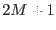
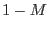
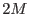
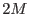

There are several ways in which the user can specify the convolving function, governed by the parameter convolvertype. These are:
The user should pay careful attention to the phase of the convolver. Equation 1 (and all others that include a sum over the convolver values) implies that the number of convolver channels, , is an odd number, and that the centre of the convolver is located at the centre channel. However, convolvers with an even number of channels are also permitted. In this case the lowest channel of the upper half of the channels is taken to be the centre channel. In other words, the sums in this case extend from  to  for a total number of convolver channels . To clarify with a couple of examples, calls of the form
for a total number of convolver channels . To clarify with a couple of examples, calls of the form
colsmooth convolvertype=user convolver='0 0 1 0 0'
or
colsmooth convolvertype=user convolver='0 0 0 1 0 0'
will leave unchanged the input values in inset.ds:SPECTRUM column RATE, but
colsmooth convolvertype=user convolver='1 0 0 0'
will left-shift all the input values by 2 channels. (Note that in this last example, the right-most two channels of the output will contain dal-type null values. Zero values would probably be better and the task may be changed in future to write zeros in this case.)
The elements of the convolver may not sum to zero. Negative and zero-valued elements should be avoided if filling of holes is desired (see section 3.3.1 below).
Note that, under default settings, no convolution is performed.